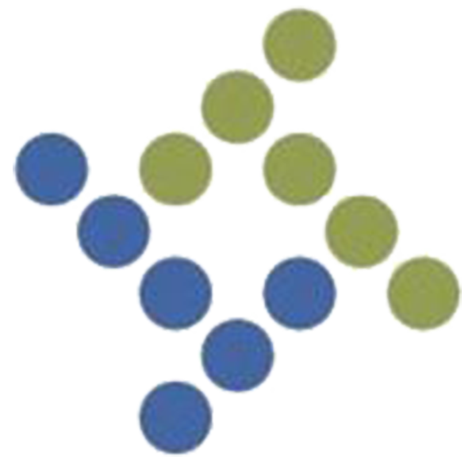
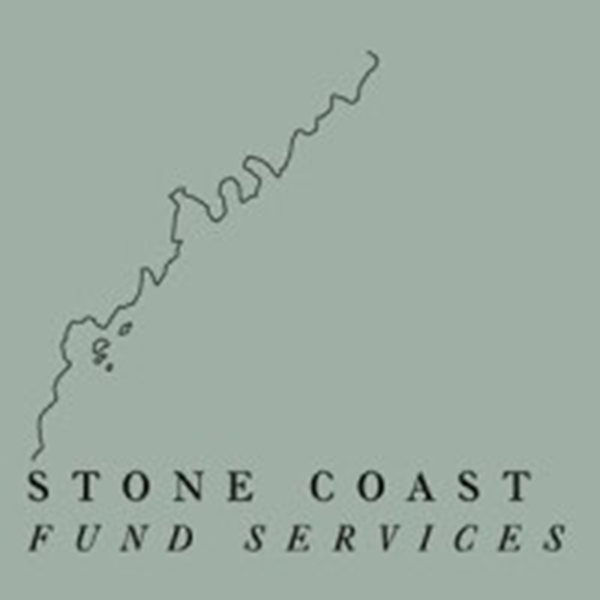
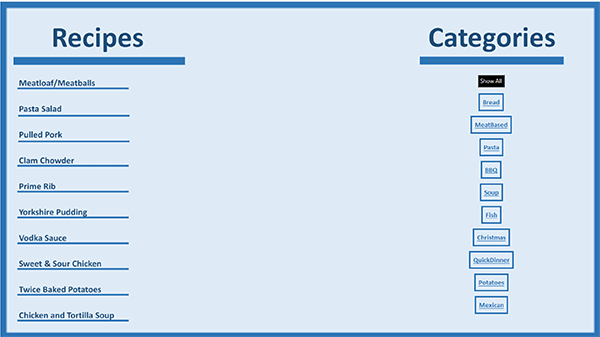
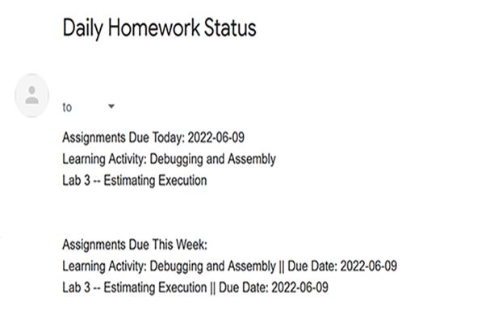

Education
University of Maine - Orono, ME
Bachelors of Science in Finance, 2017-2021
- Graduated Summa Cum Laude with a 3.8 GPA .
- Concentration in Management Information Systems.
- Involved in many extracurriculars inclduing touring musical groups, multicultural groups, and tutoring.
- Relevant Course Work: Problem Solving using Computer Programming, Information Systems & Technology, Network Design & Applications, Database Management, and Object-Oriented Programming.
Northeastern University - Portland, ME
Masters of Science in Computer Science, 2022-Present
- Relevant Course Work: Discrete Mathematics, Intensive Foundations of Computer Science, and “Data Structures, Algorithms, and Apps.”
Work Experience

Tyler Technologies
Technical Services Support Specialist
2021 - 2022
- Troubleshot ~100 concurrent support cases; reviewed symptoms, resolved issues, and created documentation.
- Navigated and analyzed Tyler Technologies Munis Databases to solve client problems.
- Collaborated with first tier manager to organize support technicians and ensure adherence to internal processes.

Stone Coast Fund Services
Hedge Fund Accountant
2022 - Present
- Gather and analyze investment information utilizing Excel; consolidate data into monthly Net Asset Value Packet used by hedge fund managers and investors to inform decision-making.
- Reconcile daily trading activity to monitor potential fraud for hedge fund managing capital of $1.8 Billion.
- Manage client communication to ensure support for cash movements and provide relevant documentation.
Projects

MVC Cookbook
- A Python Program which stores the Description and Recipe for 10 of my family recipes in a user-friendly GUI that was created with Python's Tkinter Library.
- This cookbook follows the Model View Controller Structure, the model was created with the Panda's Dataframe from the Panda's library.
Github Repo

API Homework Reminder
- Wrote script in Java to call the Learning Management System API to gather Homework information, this script was automated via crontab on Linux.
- Used third party libraries (such as org.JSON and Javax.mail) to interpret JSON and called the Gmail API—via Oauth2 authentication—to send out a comprehensive report on assignments due that day/week.
Github Repo